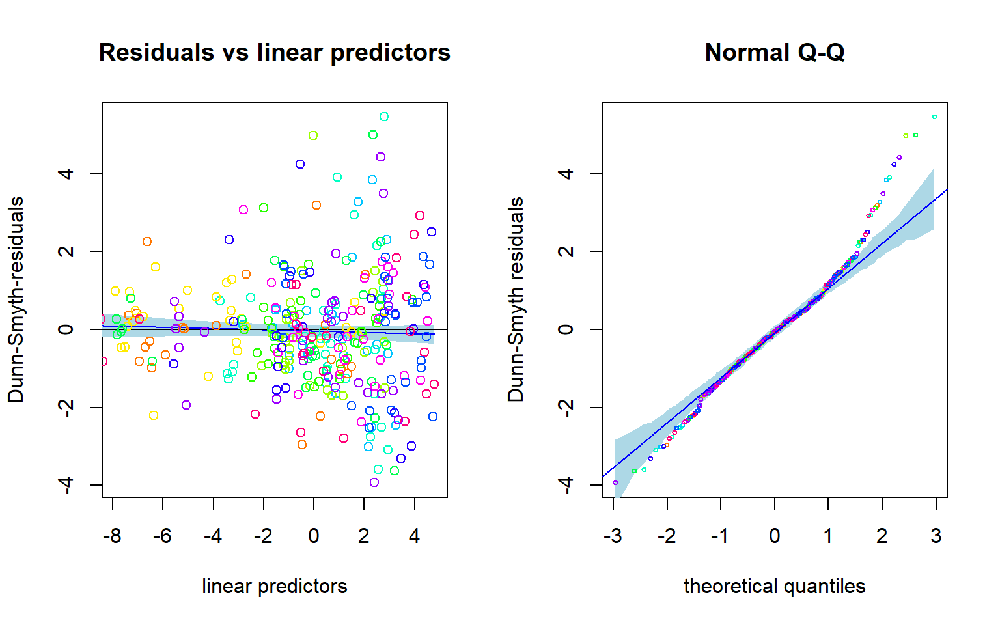
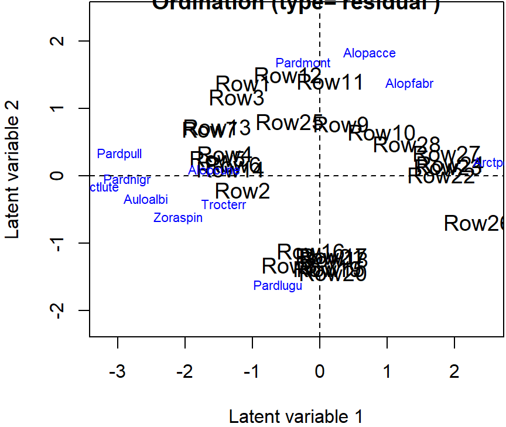
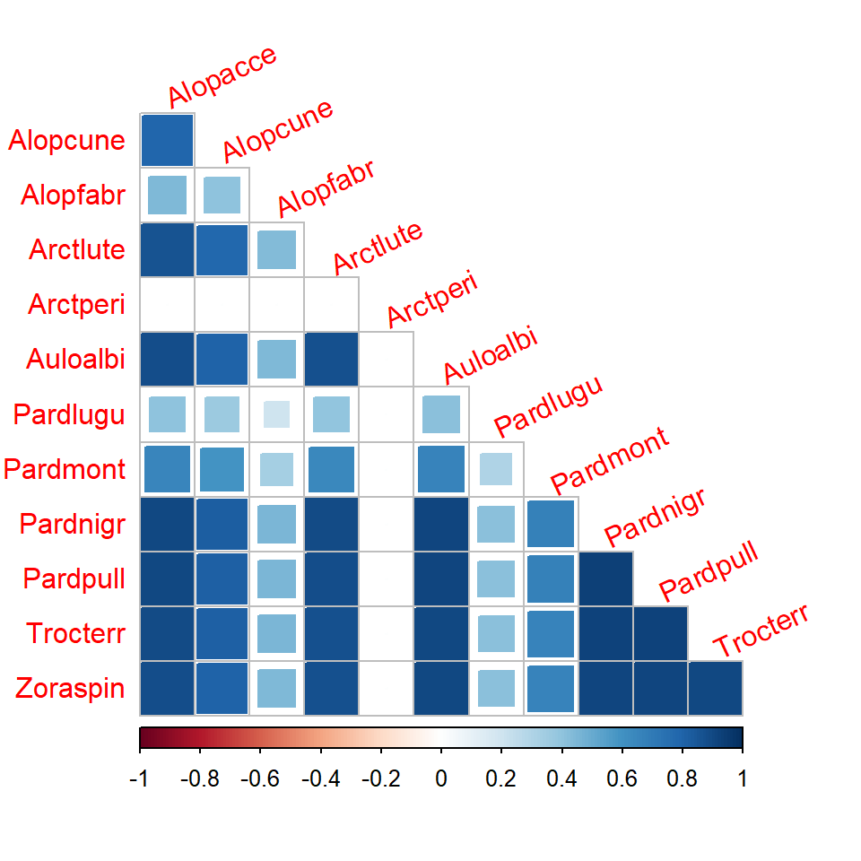

Introduction to gllvm Part 2: Species correlations
Jenni Niku
2025-07-24
Source:vignettes/vignette4.rmd
vignette4.rmdIntroduction to gllvm
R package gllvm
R package gllvm fits Generalized linear latent variable models (GLLVM) for multivariate data1.
Developed by J. Niku, W.Brooks, R. Herliansyah, F.K.C. Hui, S. Taskinen, D.I. Warton, B. van der Veen.
-
The package available in
Package installation:
# From CRAN
install.packages(gllvm)
# OR
# From GitHub using devtools package's function install_github
devtools::install_github("JenniNiku/gllvm")Problems?
gllvm package depends on R packages TMB and mvabund, try to install these first.
GLLVMs are computationally intensive to fit due the integral in log-likelihood.
gllvm package overcomes computational problems by applying closed form approximations to log-likelihood and using automatic differentiation in C++ to accelerate computation times (TMB2).
Estimation is performed using either variational approximation (VA3), extended variational approximation method (EVA4) or Laplace approximation (LA5) method implemented via R package TMB.
VA method is faster and more accurate than LA, but not applicable for all distributions and link functions.
-
Using gllvm we can fit
- GLLVM without covariates gives model-based ordination and biplots
- GLLVM with environmental and/or trait covariates for studying factors explaining species abundance
- Fourth corner models with latent variables for studying environmental-trait interactions
- GLLVM without latent variables fits basic multivariate GLMs
Additional tools: residuals, information criteria, confidence intervals, visualization.
Distributions
| Response | Distribution | Method | Link |
|---|---|---|---|
| Counts | Poisson | VA/LA | log |
| NB | VA/LA | log | |
| ZIP | VA/LA | log | |
| ZINB | VA/LA | log | |
| Binary | Bernoulli | VA/LA | probit |
| LA | logit | ||
| Ordinal | Ordinal | VA | probit |
| Normal | Gaussian | VA/LA | identity |
| Positive continuous | Gamma | VA/LA | log |
| Non-negative continuous | Exponential | VA/LA | log |
| Biomass | Tweedie | LA/EVA | log |
| Percent cover | beta | LA/EVA | probit/logit |
Data input
Main function of the gllvm package is
gllvm(), which can be used to fit GLLVMs for multivariate
data with the most important arguments listed in the following:
gllvm(y = NULL, X = NULL, TR = NULL, family, num.lv = 2,
formula = NULL, method = "VA", row.eff = FALSE, n.init=1, starting.val ="res", ...)- y: matrix of abundances
- X: matrix or data.frame of environmental variables
- TR: matrix or data.frame of trait variables
- family: distribution for responses
- num.lv: number of latent variables
- method: approximation used “VA” or “LA”
- row.eff: type of community level row effects
- n.init: number of random starting points for latent variables
- starting.val: starting value method
Example: Spiders
- Abundances of 12 hunting spider species measured as a count at 28 sites.
- Six environmental variables measured at each site:
-
soil.dry: Soil dry mass -
bare.sand: cover of bare sand -
fallen.leaves: cover of fallen leaves/twigs -
moss: cover of moss -
herb.layer: cover of herb layer -
reflection: reflection of the soil surface with a cloudless sky
-
Data fitting
Fit GLLVM with environmental variables using gllvm:
library(gllvm)
data("spider", package = "mvabund")
fitx <- gllvm(y = spider$abund, X = spider$x, family = "negative.binomial", num.lv = 2)
fitx
## Call:
## gllvm(y = spider$abund, X = spider$x, family = "negative.binomial",
## num.lv = 2)
## family:
## [1] "negative.binomial"
## method:
## [1] "VA"
##
## log-likelihood: -588.9187
## Residual degrees of freedom: 217
## AIC: 1415.837
## AICc: 1548.06
## BIC: 1870.074Model selection
- Number of latent variables is not necessarily clear beforehand when goal is not primarily in ordination, so information criteria can be used for model selection. For example, using Akaike information criterion:
X=spider$x
fitx1 <- gllvm(spider$abund, X, family = "negative.binomial", num.lv = 1)
fitx2 <- gllvm(spider$abund, X, family = "negative.binomial", num.lv = 2)
fitx3 <- gllvm(spider$abund, X, family = "negative.binomial", num.lv = 3)
AIC(fitx1)
## [1] 1393.837
AIC(fitx2)
## [1] 1415.837
AIC(fitx3)
## [1] 1435.837
Exercises
E1. Load spider data from mvabund package and take a look at the dataset.
library(gllvm)
#Package **mvabund** is loaded with **gllvm** so just load with a function `data()`.
data("spider")
# more info:
# ?spiderShow the answers.
Package mvabund is loaded
with gllvm so just load with a function
data().
# response matrix:
spider$abund
## Alopacce Alopcune Alopfabr Arctlute Arctperi Auloalbi Pardlugu Pardmont
## [1,] 25 10 0 0 0 4 0 60
## [2,] 0 2 0 0 0 30 1 1
## [3,] 15 20 2 2 0 9 1 29
## [4,] 2 6 0 1 0 24 1 7
## [5,] 1 20 0 2 0 9 1 2
## [6,] 0 6 0 6 0 6 0 11
## [7,] 2 7 0 12 0 16 1 30
## [8,] 0 11 0 0 0 7 55 2
## [9,] 1 1 0 0 0 0 0 26
## [10,] 3 0 1 0 0 0 0 22
## [11,] 15 1 2 0 0 1 0 95
## [12,] 16 13 0 0 0 0 0 96
## [13,] 3 43 1 2 0 18 1 24
## [14,] 0 2 0 1 0 4 3 14
## [15,] 0 0 0 0 0 0 6 0
## [16,] 0 3 0 0 0 0 6 0
## [17,] 0 0 0 0 0 0 2 0
## [18,] 0 1 0 0 0 0 5 0
## [19,] 0 1 0 0 0 0 12 0
## [20,] 0 2 0 0 0 0 13 0
## [21,] 0 1 0 0 0 0 16 1
## [22,] 7 0 16 0 4 0 0 2
## [23,] 17 0 15 0 7 0 2 6
## [24,] 11 0 20 0 5 0 0 3
## [25,] 9 1 9 0 0 2 1 11
## [26,] 3 0 6 0 18 0 0 0
## [27,] 29 0 11 0 4 0 0 1
## [28,] 15 0 14 0 1 0 0 6
## Pardnigr Pardpull Trocterr Zoraspin
## [1,] 12 45 57 4
## [2,] 15 37 65 9
## [3,] 18 45 66 1
## [4,] 29 94 86 25
## [5,] 135 76 91 17
## [6,] 27 24 63 34
## [7,] 89 105 118 16
## [8,] 2 1 30 3
## [9,] 1 1 2 0
## [10,] 0 0 1 0
## [11,] 0 1 4 0
## [12,] 1 8 13 0
## [13,] 53 72 97 22
## [14,] 15 72 94 32
## [15,] 0 0 25 3
## [16,] 2 0 28 4
## [17,] 0 0 23 2
## [18,] 0 0 25 0
## [19,] 1 0 22 3
## [20,] 0 0 22 2
## [21,] 0 1 18 2
## [22,] 0 0 1 0
## [23,] 0 0 1 0
## [24,] 0 0 0 0
## [25,] 6 0 16 6
## [26,] 0 0 1 0
## [27,] 0 0 0 0
## [28,] 0 0 2 0
# Environmental variables
spider$x
## soil.dry bare.sand fallen.leaves moss herb.layer reflection
## 1 2.3321 0.0000 0.0000 3.0445 4.4543 3.9120
## 2 3.0493 0.0000 1.7918 1.0986 4.5643 1.6094
## 3 2.5572 0.0000 0.0000 2.3979 4.6052 3.6889
## 4 2.6741 0.0000 0.0000 2.3979 4.6151 2.9957
## 5 3.0155 0.0000 0.0000 0.0000 4.6151 2.3026
## 6 3.3810 2.3979 3.4340 2.3979 3.4340 0.6931
## 7 3.1781 0.0000 0.0000 0.6931 4.6151 2.3026
## 8 2.6247 0.0000 4.2627 1.0986 3.4340 0.6931
## 9 2.4849 0.0000 0.0000 4.3307 3.2581 3.4012
## 10 2.1972 3.9318 0.0000 3.4340 3.0445 3.6889
## 11 2.2192 0.0000 0.0000 4.1109 3.7136 3.6889
## 12 2.2925 0.0000 0.0000 3.8286 4.0254 3.6889
## 13 3.5175 1.7918 1.7918 0.6931 4.5109 3.4012
## 14 3.0865 0.0000 0.0000 1.7918 4.5643 1.0986
## 15 3.2696 0.0000 4.3944 0.6931 3.0445 0.6931
## 16 3.0301 0.0000 4.6052 0.6931 0.6931 0.0000
## 17 3.3322 0.0000 4.4543 0.6931 3.0445 1.0986
## 18 3.1224 0.0000 4.3944 0.0000 3.0445 1.0986
## 19 2.9232 0.0000 4.5109 1.6094 1.6094 0.0000
## 20 3.1091 0.0000 4.5951 0.6931 0.6931 0.0000
## 21 2.9755 0.0000 4.5643 0.6931 1.7918 0.0000
## 22 1.2528 3.2581 0.0000 4.3307 0.6931 3.9120
## 23 1.1939 3.0445 0.0000 4.0254 3.2581 4.0943
## 24 1.6487 3.2581 0.0000 4.0254 3.0445 4.0073
## 25 1.8245 3.5835 0.0000 1.0986 4.1109 2.3026
## 26 0.9933 4.5109 0.0000 1.7918 1.7918 4.3820
## 27 0.9555 2.3979 0.0000 3.8286 3.4340 3.6889
## 28 0.9555 3.4340 0.0000 3.7136 3.4340 3.6889
# Plot data using boxplot:
boxplot(spider$abund)
E2. Fit GLLVM with two latent variables to spider data with a suitable distribution. Data consists of counts of spider species.
# Take a look at the function documentation for help:
?gllvmShow the answers.
2. Response variables in spider data are counts, so Poisson, negative binomial and zero inflated Poisson are possible. However, ZIP is implemented only with Laplace method, so it need to be noticed, that if models are fitted with different methods they can not be compared with information criteria. Let’s try just with a Poisson and NB. NOTE THAT the results may not be exactly the same as below, as the initial values for each model fit are slightly different, so the results may
# Fit a GLLVM to data
fitp <- gllvm(y=spider$abund, family = poisson(), num.lv = 2)
fitp
## Call:
## gllvm(y = spider$abund, family = poisson(), num.lv = 2)
## family:
## [1] "poisson"
## method:
## [1] "VA"
##
## log-likelihood: -845.8277
## Residual degrees of freedom: 301
## AIC: 1761.655
## AICc: 1770.055
## BIC: 1895.254
fitnb <- gllvm(y=spider$abund, family = "negative.binomial", num.lv = 2)
fitnb
## Call:
## gllvm(y = spider$abund, family = "negative.binomial", num.lv = 2)
## family:
## [1] "negative.binomial"
## method:
## [1] "VA"
##
## log-likelihood: -733.6806
## Residual degrees of freedom: 289
## AIC: 1561.361
## AICc: 1577.028
## BIC: 1740.765Based on AIC, NB distribution suits better. How about residual analysis: NOTE THAT The package uses randomized quantile residuals so each time you plot the residuals, they look a little different.

plot(fitnb, which = 1:2)
You could do these comparisons with Laplace method as well, using the code below, and it would give the same conclusion that NB distribution suits best:
GLLVM with two latent variables can be used as a model-based approach to unconstrained ordination, as considered at the first day of the workshop. E3. Fit GLLVM with environmental variables
soil.dry and reflection to the data with
suitable number of latent variables.
Show the answers.
We can extract the two columns from the environmental variable matrix or define the model using formula.
# `soil.dry` and `reflection` are in columns 1 and 6
X <- spider$x[,c(1,6)]
fitx1 <- gllvm(spider$abund, X, family = "negative.binomial", num.lv = 1)
fitx2 <- gllvm(spider$abund, X, family = "negative.binomial", num.lv = 2)
fitx3 <- gllvm(spider$abund, X, family = "negative.binomial", num.lv = 3)
AIC(fitx1)
## [1] 1449.428
AIC(fitx2)
## [1] 1471.428
AIC(fitx3)
## [1] 1491.428
# Or alternatively using formula:
fitx1 <- gllvm(spider$abund, spider$x, formula = ~soil.dry + reflection, family = "negative.binomial", num.lv = 1)
fitx1
## Call:
## gllvm(y = spider$abund, X = spider$x, formula = ~soil.dry + reflection,
## family = "negative.binomial", num.lv = 1)
## family:
## [1] "negative.binomial"
## method:
## [1] "VA"
##
## log-likelihood: -664.7139
## Residual degrees of freedom: 276
## AIC: 1449.428
## AICc: 1476.046
## BIC: 1678.454E4. Explore the model fit. Find the coefficients for environmental covariates.
Show the answers.
Estimated parameters can be obtained with
coef() function. Confidence intervals for parameters are
obtained with confint().
coef(fitx1)
## $Species.scores
## LV1
## Alopacce 1.000000e+00
## Alopcune 1.286733e+00
## Alopfabr 4.411630e-01
## Arctlute 2.261594e+00
## Arctperi 1.433717e-07
## Auloalbi 2.499209e+00
## Pardlugu 3.974347e-01
## Pardmont 9.559590e-01
## Pardnigr 2.566342e+00
## Pardpull 2.528368e+00
## Trocterr 9.659265e-01
## Zoraspin 1.751388e+00
##
## $sigma.lv
## LV1
## 0.8536253
##
## $Intercept
## Alopacce Alopcune Alopfabr Arctlute Arctperi Auloalbi Pardlugu
## -3.009377 -7.406969 2.077220 -21.475798 -7.919582 -12.966730 4.567605
## Pardmont Pardnigr Pardpull Trocterr Zoraspin
## -6.090949 -14.644188 -16.455395 -3.711550 -9.214586
##
## $Xcoef
## soil.dry reflection
## Alopacce -0.3441037 1.5943140
## Alopcune 2.6110953 0.6246639
## Alopfabr -1.8668375 0.7469586
## Arctlute 6.3216964 0.8206350
## Arctperi -1.7567065 2.8891032
## Auloalbi 4.1814551 0.6831819
## Pardlugu -0.5452423 -1.2604867
## Pardmont 1.7924381 1.4691356
## Pardnigr 4.9041677 0.8601697
## Pardpull 5.3496114 1.2823021
## Trocterr 2.3357659 0.2234557
## Zoraspin 3.5553177 0.1198170
##
## $inv.phi
## Alopacce Alopcune Alopfabr Arctlute Arctperi Auloalbi
## 9.379503e+00 1.699524e+00 1.577579e+00 1.064263e+00 1.923015e+07 1.511534e+00
## Pardlugu Pardmont Pardnigr Pardpull Trocterr Zoraspin
## 1.543652e+00 9.784602e-01 2.517861e+00 2.339520e+00 1.471005e+01 3.625253e+00
##
## $phi
## Alopacce Alopcune Alopfabr Arctlute Arctperi Auloalbi
## 1.066155e-01 5.884000e-01 6.338828e-01 9.396176e-01 5.200168e-08 6.615796e-01
## Pardlugu Pardmont Pardnigr Pardpull Trocterr Zoraspin
## 6.478145e-01 1.022014e+00 3.971625e-01 4.274382e-01 6.798072e-02 2.758428e-01
# Coefficients for covariates are named as `Xcoef`
# Confidence intervals for these coefficients:
confint(fitx1, parm = "Xcoef")
## cilow ciup
## Xcoef1 -1.02681234 0.3386050
## Xcoef2 1.34774730 3.8744433
## Xcoef3 -2.85506399 -0.8786109
## Xcoef4 2.24725063 10.3961421
## Xcoef5 -2.87611194 -0.6373011
## Xcoef6 1.79155613 6.5713541
## Xcoef7 -1.64581392 0.5553294
## Xcoef8 0.73363036 2.8512458
## Xcoef9 2.78583490 7.0225005
## Xcoef10 3.14361007 7.5556127
## Xcoef11 1.64618177 3.0253500
## Xcoef12 1.97721819 5.1334173
## Xcoef13 0.95834424 2.2302838
## Xcoef14 0.13815904 1.1111687
## Xcoef15 -0.24250155 1.7364187
## Xcoef16 -0.34249977 1.9837699
## Xcoef17 1.63803760 4.1401688
## Xcoef18 -0.18425926 1.5506231
## Xcoef19 -1.73556522 -0.7854082
## Xcoef20 0.89992246 2.0383487
## Xcoef21 0.01739073 1.7029487
## Xcoef22 0.40739537 2.1572088
## Xcoef23 -0.08590530 0.5328167
## Xcoef24 -0.46475603 0.7043900
# The first 12 intervals are for soil.dry and next 12 for reflectionProblems? See hints:
I have problems in model fitting. My model
converges to infinity or local maxima: GLLVMs are complex models
where starting values have a big role. Choosing a different starting
value method (see argument starting.val) or use multiple
runs and pick up the one giving highest log-likelihood value using
argument n.init. More variation to the starting points can
be added with jitter.var.
My results does not look the same as in answers: The results may not be exactly the same as in the answers, as the initial values for each model fit are slightly different, so the results may also differ slightly.
Studying species correlations
Species correlations
Latent variables induce correlation across response variables, and so provide means of estimating correlation patterns across species, and the extent to which they can be explained by environmental variables.
Information on correlation is stored in the LV loadings , so the residual covariance matrix, storing information on species co-occurrence that is not explained by environmental variables, can be calculated as , where .
getResidualCorfunction can be used to estimate the correlation matrix of the linear predictor across species.Let’s consider first the correlation matrix based on a model without predictors:
fitnb <- gllvm(spider$abund, family = "negative.binomial", num.lv = 2)- The correlation matrix based on such model does not take into account the environmental conditions driving species abundances at sites, and reflects only what has been observed.
Visualizing species correlations
The residual correlations can be visualized either using biplot, which shows the species ordination, or visualizing the actual correlation matrix using, eg., a
corrplotpackage.The biplot can be produced using a function
ordiplot()with an argumentbiplot = TRUE:
fitnb <- gllvm(spider$abund, family = "negative.binomial", num.lv = 2)
ordiplot(fitnb, biplot = TRUE)
abline(h = 0, v = 0, lty=2)
- Correlations can be visualized more precisely using
corrplot()function:
fitnb <- gllvm(spider$abund, family = "negative.binomial", num.lv = 2)
cr <- getResidualCor(fitnb)
library(corrplot);
## corrplot 0.95 loaded
corrplot(cr, diag = FALSE, type = "lower", method = "square", tl.srt = 25)
- The same correlations can also be visualized with species ordination in biplot:
Studying effects of covariates
Studying effects of environmental variables
- The effects of environmental variables on species can be studied by including environmental variables to GLLVM: .
- is a vector of species specific coefficients for environmental variables.
- Next consider for example two environmental variables,
soil.dry(soil dry mass) andreflection(reflection of the soil surface with a cloudless sky), which shows different environmental gradients in ordination:
rbPal <- c("#00FA9A", "#00EC9F", "#00DFA4", "#00D2A9", "#00C5AF", "#00B8B4", "#00ABB9", "#009DBF", "#0090C4", "#0083C9", "#0076CF", "#0069D4", "#005CD9", "#004EDF", "#0041E4", "#0034E9", "#0027EF", "#001AF4", "#000DF9", "#0000FF")
X <- spider$x[,c(1,6)]
par(mfrow = c(1,2), mar=c(4,4,2,2))
for(i in 1:ncol(X)){
Col <- rbPal[as.numeric(cut(X[,i], breaks = 20))]
ordiplot(fitnb, symbols = T, s.colors = Col, main = colnames(X)[i], biplot = TRUE)
abline(h=0,v=0, lty=2)
}
Coefficient plot
-
coefplot()plots point estimates of the species specific environmental coefficients with confidence intervals. - As biplots with environmental gradients indicated that, for example, species named Arctperi prefers sites with low amount of dry soil mass and high amount of reflection with sky, the similar effects can be seen in the coefficients plotted with their confidence intervals.
fitx1 <- gllvm(spider$abund, X, family = "negative.binomial", num.lv = 1)
coefplot(fitx1, mfrow = c(1,2), cex.ylab = 0.8)
Correlation matrix
- Correlation matrix for model with predictors shows correlation patterns between species when the effect of the predictors are taken into account.
- When the effects of covariates
dry.soilandreflectionwere accounted, negative correlation between species do not seem to exist anymore, indicating that negative correlations were explained by different environmental conditions at sites and how species respond to them, rather than direct species interactions.
crx <- getResidualCor(fitx1)
corrplot(crx, diag = FALSE, type = "lower", method = "square", tl.srt = 25)
Fourth corner models
If species trait variables , measuring eg. species behaviour or physical appearance, would be available, fourth corner models should be considered:
Such models can also be fitted with
gllvm()function by including a matrix of traits with argumentTR.Examples can be found in the gllvm package’s vignettes.
Niku, J., F.K.C. Hui, S. Taskinen, and D.I. Warton. 2019. Gllvm - Fast Analysis of Multivariate Abundance Data with Generalized Linear Latent Variable Models in R. 10. Methods in Ecology and Evolution: 2173–82↩︎
Kasper Kristensen, Anders Nielsen, Casper W. Berg, Hans Skaug, Bradley M. Bell (2016). TMB: Automatic Differentiation and Laplace Approximation. Journal of Statistical Software, 70(5), 1-21↩︎
Hui, F. K. C., Warton, D., Ormerod, J., Haapaniemi, V., and Taskinen, S. (2017). Variational approximations for generalized linear latent variable models. Journal of Computational and Graphical Statistics. Journal of Computational and Graphical Statistics, 26:35-43↩︎
Korhonen, P., Hui, F. K. C., Niku, J., and Taskinen, S. (2021). Fast, universal estimation of latent variable models using extended variational approximations, arXiv:2107.02627 .↩︎
Niku, J., Warton, D. I., Hui, F. K. C., and Taskinen, S. (2017). Generalized linear latent variable models for multivariate count and biomass data in ecology. Journal of Agricultural, Biological, and Environmental Statistics, 22:498-522.↩︎